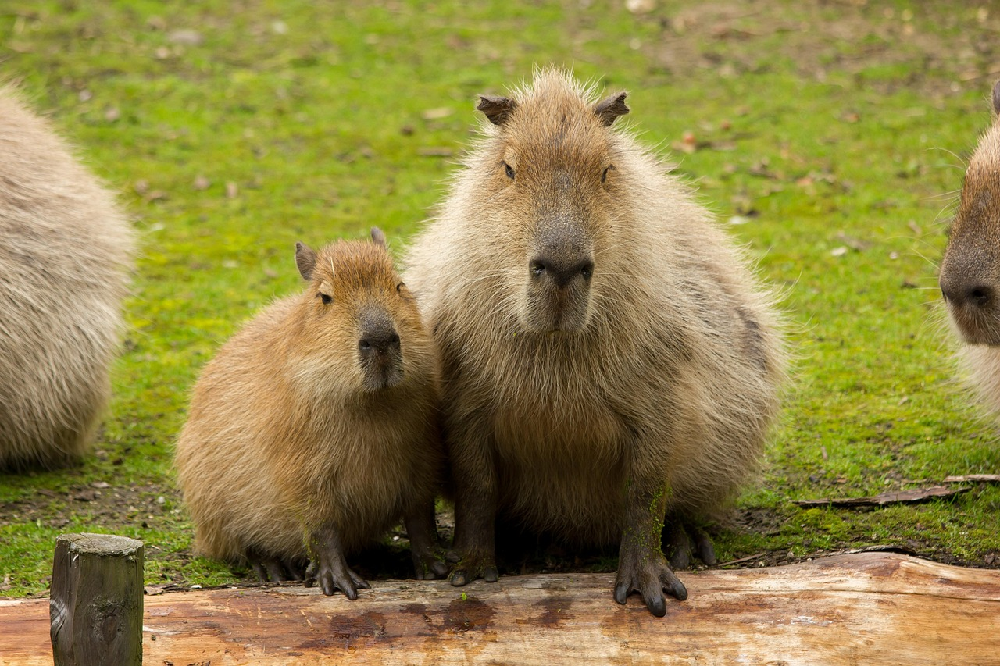
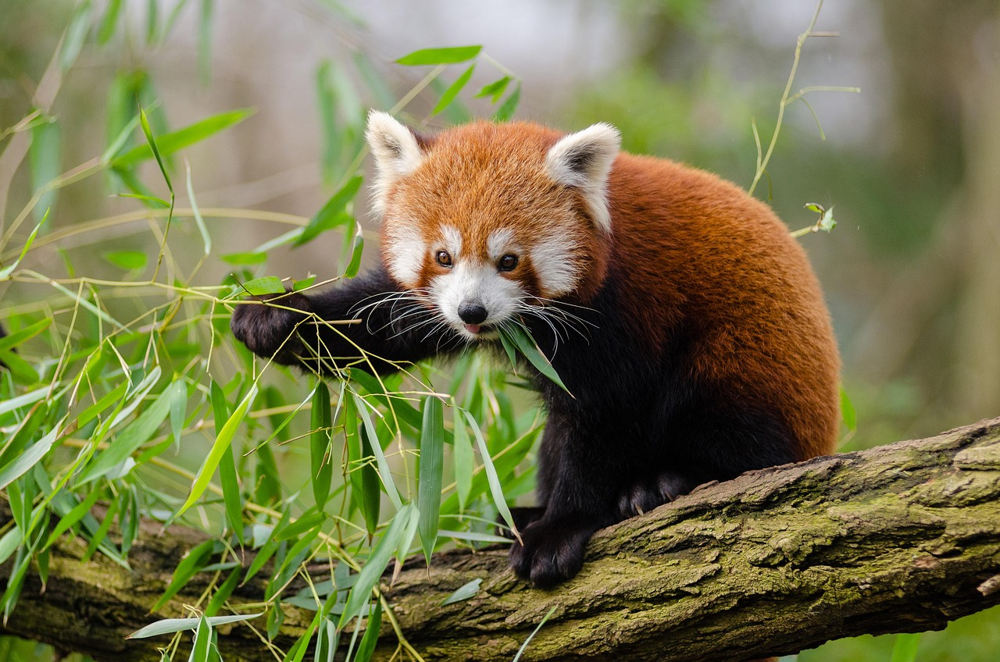
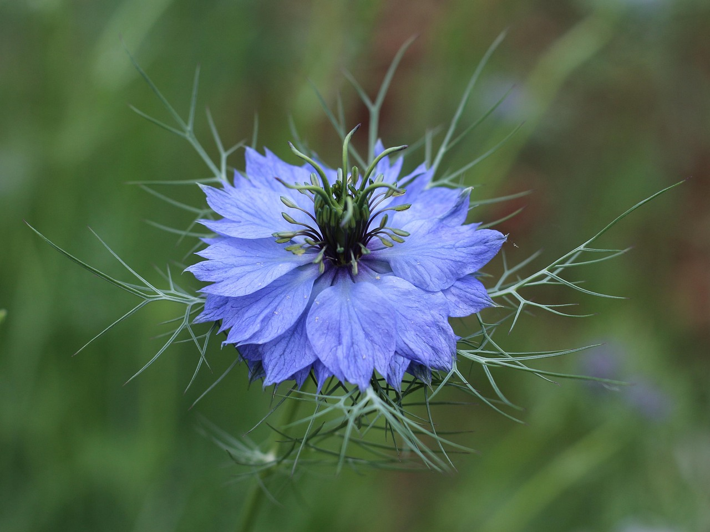
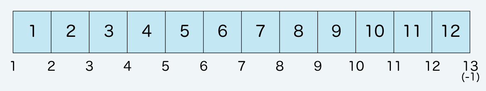
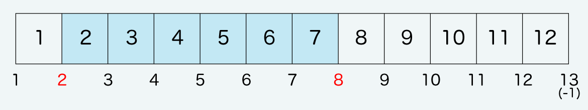
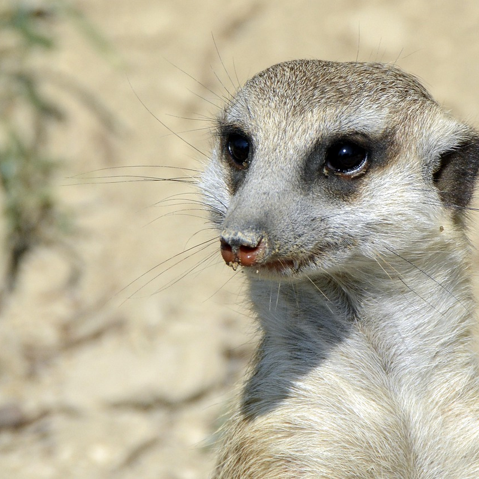
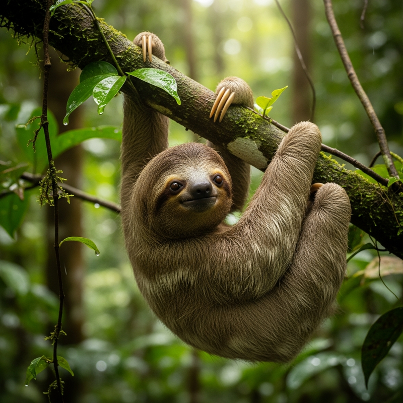

本模板使用說明
title 標籤的設定非常重要。請仔細選擇關鍵字並正確輸入。
首先，開啟 HTML 原始碼，
<title>森之音動物園</title>
進行編輯。
若您的網站名稱為「森之音動物園 Morino-oto Zoo」，
<title>森之音動物園 Morino-oto Zoo</title>
即可。若考慮 SEO，請將重要關鍵字放在開頭。
請修改 copyright。
接著在 HTML 下方，有
Copyright© 森之音動物園 Morino-oto Zoo All Rights Reserved.
的部分也請變更為 森之音動物園 Morino-oto Zoo。
請修改 meta 標籤。
開啟 HTML 原始碼以修改 meta 標籤。
在原始碼上方，
content="在這裡填寫網站說明"
有這段文字，請替換為您的網站說明。此段文字可能會顯示在搜尋結果中，請簡潔撰寫吸引訪客的說明。
請修改 h1 標誌的 alt 標籤。
在 HTML 端，
alt="森之音動物園 Morino-oto Zoo"
有此處內容，也請一併變更為森之音動物園 Morino-oto Zoo。
關於圖示圖片 (Font Awesome 說明)
未存放在 images 資料夾中的圖片 (圖示) 主要是 Font Awesome 的素材。(※地圖上的圖示為瀏覽器預設圖示)
Font Awesome 官方網站
Font Awesome 圖示列表
有時使用 i 標籤直接在 HTML 中載入圖示，有時則透過 CSS 偽元素載入。
若需替換為其他圖示，請參閱本網站的手冊說明。
使用 Font Awesome 所需的標籤與檔案。
在 css 資料夾的 style.css 開頭處載入的「Font Awesome 載入」區塊。
若經過多年，可能會出現運作上的問題。
若未編輯模板卻突然發生異常，請嘗試更改 style.css 開頭從 CDN 載入的 Font Awesome 相關檔案版本，確認是否能恢復正常。
關於插圖與照片素材
本模板使用的插圖與照片素材，可於我們的素材網站haconana免費下載。
依據授權合約，有時會提供回饋優惠，若有需求請查看授權頁面。(※回饋優惠可能隨時終止)
關於選單
主選單為開關區塊類型。
開關選單的程式碼位於 HTML 底部。請注意這與頁首選單不同。
測試運作時，若操作過快可能導致腳本來不及反應。請以一般使用者的操作速度進行測試。
ul、ol要素
- 這是一個 ol 元素。範例文字。
- 這是一個 ol 元素。範例文字。
- 這是一個 ol 元素。範例文字。
- 這是一個 ul 元素。範例文字。
- 這是一個 ul 元素。範例文字。
- 這是一個 ul 元素。範例文字。
首頁幻燈片說明
設定位於 css 資料夾的 slide.css 中。
將套用第一張圖片的長寬比。
圖片尺寸可不一致，但第一張圖片的長寬比將套用於所有圖片。不符合比例的圖片將被裁切。
圖片新增方法
目前為 3 張圖片構成，若欲新增第 4 張圖片，請複製第 3 張的區塊，並將 img 行的檔名更改為第 4 張圖片的檔名即可。
適用於小型裝置的圖片
在 index.html 中，
srcset="images/1s.jpg"請覆寫指定的圖片檔名。本模板中已放入壓縮過尺寸的圖片。
若不欲使用小型裝置專用圖片，請勿使用 picture 程式碼，僅保留一般的 img 部分即可。
↓ 修改前
<picture><source media="(max-width: 800px)" srcset="images/1s.jpg"><img src="images/1.jpg" alt=""></picture>
↓ 修改後
<img src="images/1.jpg" alt="">
關於 YouTube 影片
首頁影片為 YouTube 影片。若您有頻道，只需替換 iframe 程式碼即可更改影片。
(若在本地端會發生錯誤，請於伺服器上確認。)
若無法使用 YouTube 影片，亦可直接放置 .mp4 等格式的影片。
範例：若影片檔名為movie.mp4並放置於 images 資料夾中。
<video src="images/movie.mp4" controls playsinline preload="metadata"></video>
關於園區導覽的框架
首頁「園區導覽」使用的照片框架是透過 css 資料夾中 style.css 的 mask1 至 mask6 進行設定。加上 mask1 至 mask6 的 class 即可套用框架。若未加上 mask，則為一般的正方形。
「周邊景點」地圖的使用方法
地圖與地標皆直接放置於 HTML 中。
地標位置也是在 HTML 中，即 style 後方的數值。
此處的地標圖示與選單相同，皆為一般的「表情符號」。設計將隨瀏覽環境而異。
文字與地標尺寸等設定，請在 css 資料夾中搜尋「image-map-container」，即可找到設定區塊。
關於進場動畫
以下的進場動畫範例皆整理於_sample_inview.html中。
可輕鬆更改為喜愛的動畫，亦可製作原創動畫。



縮圖橫向幻燈片
支援由右至左 (rtl) 與由左至右 (ltr) 兩種模式。
背景圖片向上滑動的區塊
請準備直式圖片，橫式圖片無法產生效果。
grid-box 版面配置說明 (使用於 info.html)
使用各種 grid 版面配置時，請務必在外框加上 <div class="grid-box"> ，並在其中放入 section 。
在 section 中設定照片或文字。
本模板設定了 12 個網格

即 css 資料夾 style.css 中的 grid-template-columns: repeat(12, 1fr);該行。
image-01 與 text-01
圖片配置於右側，文字配置於左側。
※在小型裝置上將依照 HTML 順序顯示。
在 style.css 中搜尋 image-01 (主要用於圖片)，會找到grid-column: 8 / 12;。這代表佔用第 8 到第 12 條線之間的網格。

緊接著下方的 text-01 (主要用於文字) 寫著grid-column: 2 / 8;，即以下內容。

reverse
在外側的 section 加上class="reverse"，配置將反轉。
※在小型裝置上將依照 HTML 順序顯示。
標題左上角裝飾插圖
class="kazari"加上此 class 並配置 img 即可呈現此效果。請直接在 HTML 端的行內樣式 (style="〜〜") 中記載配置位置。基準點請使用 top 或 left。此處將其放入 text 區塊，但放入 image 區塊亦可。

image-02 與 text-02
圖片配置於左側，文字配置於圖片下方。
※在小型裝置上將依照 HTML 順序顯示。
image-02 標示為grid-column: 1 / 10;，代表佔用第 1 到第 10 條線之間的網格。
text-02 標示為grid-column: 2 / 10;。若文字從第 1 條線開始會缺少左側空白顯得擁擠，因此刻意從第 2 條線開始。
reverse
在外側的 section 加上class="reverse"，配置將反轉。
※在小型裝置上將依照 HTML 順序顯示。
與上方不同，由於此處左側有充裕空間，因此將文字起始點與圖片左端對齊。
↑ image-wide
圖片區塊指定 image-wide 的範例。
grid-column: 2 / 12;

↑ 若未指定任何項目
將擴展至最大寬度。
將套用 image 與 text 的預設值。
image 為grid-column: 1 / -1;。「-1」代表最右端的線，在此情況下等同於「13」。
text 為grid-column: 2 / 12;。
補充說明，請在所有模式中保留 image、up、text 等 class。up 是由下往上淡入的動畫，若不需要此效果可將其移除。